[ROMANTIC MUTE PINK]
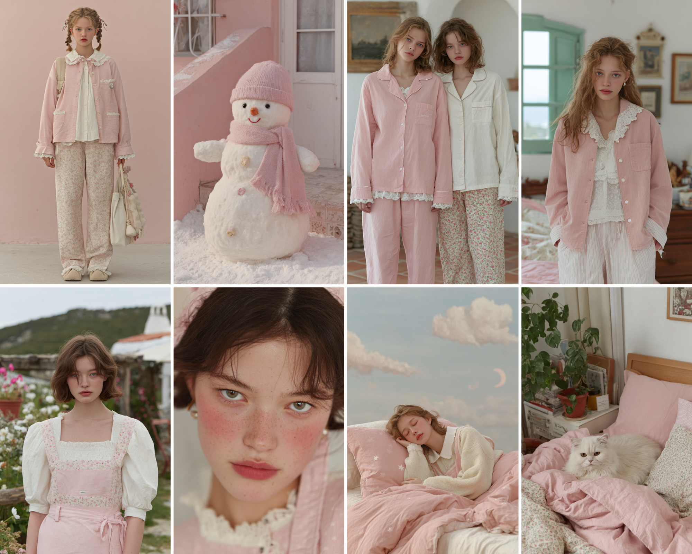
[ROMANTIC MUTE PINK 활용 예]
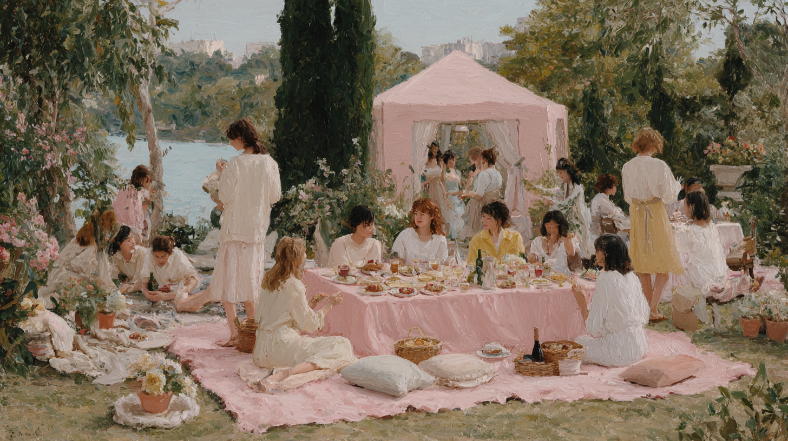
프롬프트에 oil painting을 추가하여 유화로 만들어도 색감이 아름다워요. 🙂
An oil painting on canvas. group of young people in pastel colors are having an outdoor picnic, surrounded by lush greenery and pink bushes. some are standing on plush blankets while others sit at tables covered in soft fabrics. the scene is set near the water's edge, creating a serene atmosphere. in the background, there's a small gazebo that adds to the picturesque setting. --ar 16:9 --profile 2nm7lr4 --v 7
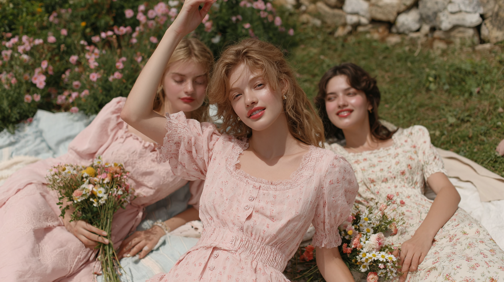
미세한 톤 다운을 원하는 경우, 16:9 등 가로 길이가 긴 비율의 이미지 작업시
--p rapzz44 를 추가하여 함께 사용해주시면 좋습니다.
무드보드 코드 : --p 2nm7lr4
- OHHEE가 직접 셋팅한 무드보드 - - p 코드 입니다.
- 뮤트한 딸기우유 핑크 컬러가 잘 표현되는 무드보드이며 페미닌 무드의 룩북 작업,
깔끔하면서 선명한 로맨틱 무드, 코티지 코어 이미지 작업시 유용합니다. - 인종/베이스 : European / Caucasian, 뚜렷하고 여성스러운 이목구비로 생성되도록 셋팅하였습니다.
--p 2nm7lr4 --v 7
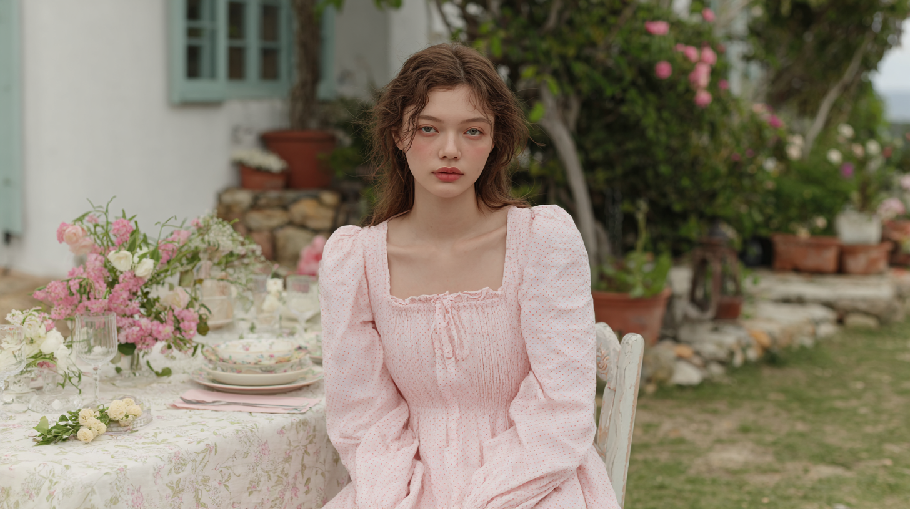
dreamcore scene of a girl sleeping on a floating bed under a starry sky, moonlight pouring like water, soft pastel clouds, glowing stars, cinematic soft lighting, ethereal atmosphere, ultra detailed --ar 2:3 --raw --profile 2nm7lr4 --v 7
[VINTAGE FILM CAMERA & COQUETTE MOOD]
[VINTAGE FILM CAMERA & COQUETTE MOOD 활용 예]
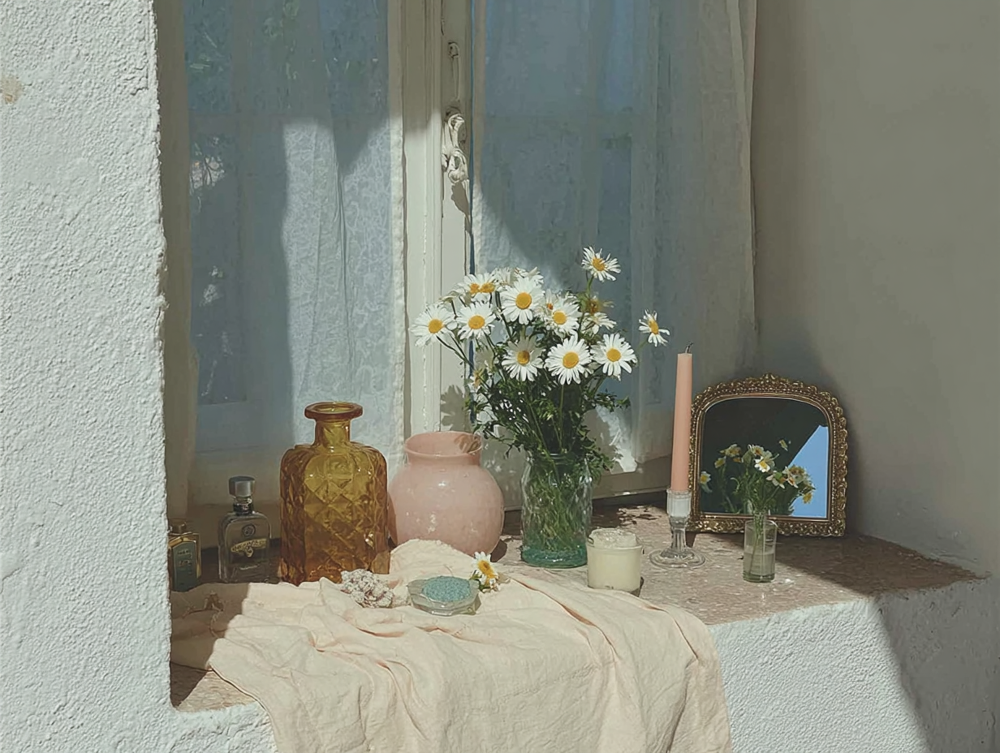
a softly lit vintage still-life arrangement on a rustic plaster windowsill. sheer white curtains gently glowing with diffused natural daylight. draped ivory fabric cascading across the ledge. an oval antique gold-framed mirror leaning against the wall. a pastel pink frosted glass vase, an amber marbled glass decanter, a small white ceramic vase with daisy flowers, and a tall candlestick holding a mauve taper candle. additional details include a small perfume bottle. warm muted tones, serene and poetic atmosphere, high-detail photography, soft shadows, textured surfaces --ar 4:3 --raw --p qj5ci6x --v 7
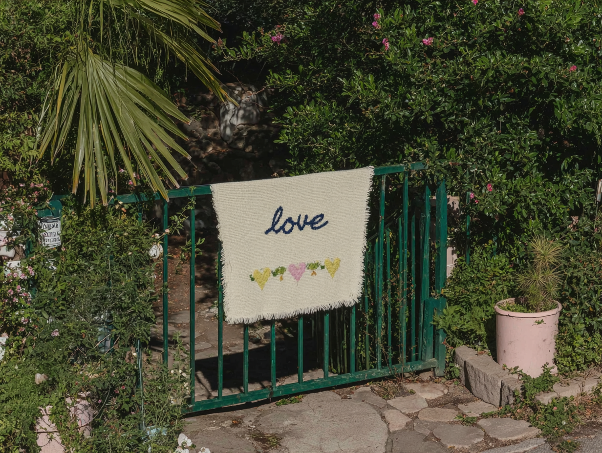
무드보드 코드 : --p qj5ci6x
- OHHEE가 직접 셋팅한 무드보드 --p 코드 입니다.
- 미세한 그레인, 은은한 자연광으로 빈티지한 분위기를 극대화 하도록 셋팅했습니다.
- 전체적으로 뮤트한 톤이라 원색의 이미지가 생성되는 다른 무드보드나 - - sref 와 함께 사용하면,
쨍한 채도를 낮춰주면서 밸런스가 좋습니다. - 화질 개선을 위해 미드저니에서 업스케일을 진행할 경우 이미지 자체의 그레인 효과가 사라지기도 합니다. 업스케일 하지 않고 사용하거나, 업스케일 후 포토샵으로 그레인 효과를 추가해도 좋습니다.
- 인종/베이스 : Caucasian, 인형처럼 예쁜 외모는 아니나 빈티지 무드에 어울리는 정감 가는 외모를 의도하고 셋팅 하였습니다.
--p qj5ci6x --v 7
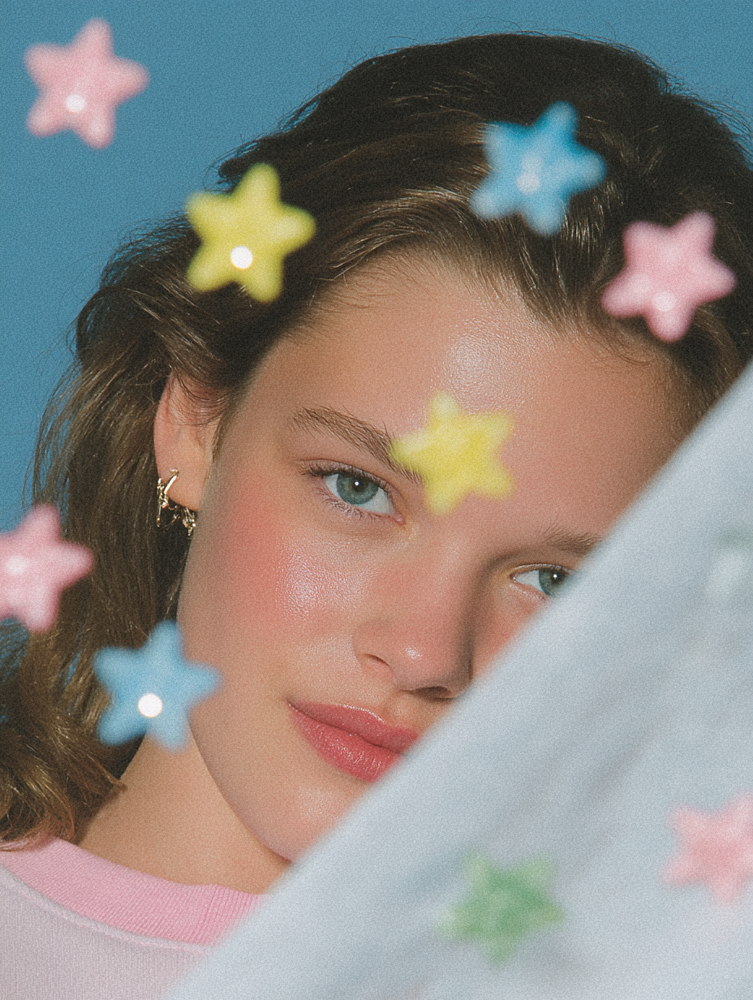
fantasy dreamcore portrait of a girl looking at someone through floating glowing stars, soft light separating them, emotional longing, surreal atmosphere, cinematic lighting --ar 4:3 --sref 4151406827 --p qj5ci6x --v 7
\<\<\< [PROMPT]
a white blanket with the word "love" embroidered on it hangs outside an iron gate in front of green hedges and flowers, pink potted plants, and yellow hearts --ar 4:3 --p qj5ci6x --v 7
[ROMANTIC WARM PINK]
[ROMANTIC WARM PINK 활용 예]
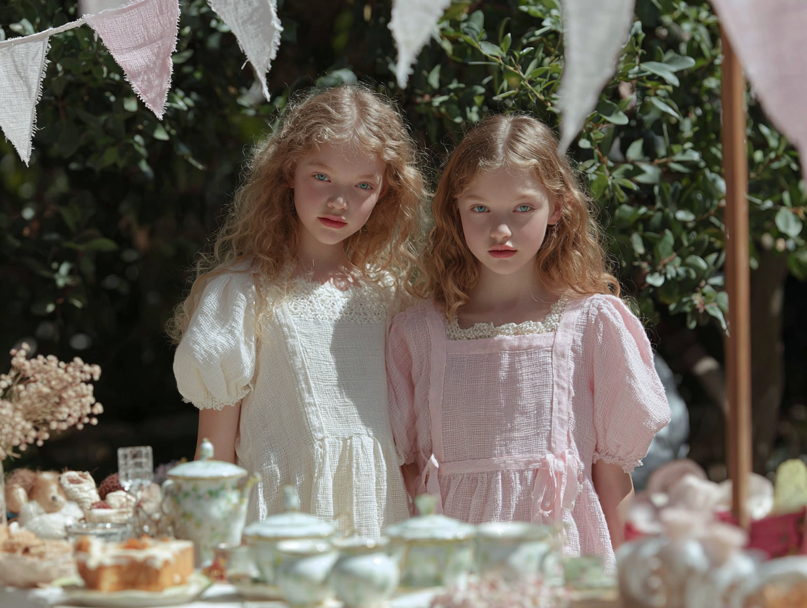
two young girls participating in a vintage flea market in a blooming garden, standing beside a small wooden stall draped with lace tablecloth, antique porcelain teacups, embroidered linens, handmade dolls and dried flower bouquets displayed neatly, soft breeze moving their long wavy hair, one girl wearing a white vintage cotton dress with delicate eyelet lace sleeves, the other in a pale blush dress with ribbon sash, sunlight filtering through tree leaves casting dappled light, pastel bunting flags gently swaying above, warm golden hour atmosphere, --ar 4:3 --raw --p 8euhz28 --stylize 200 --v 7
무드보드 코드 : --p 8euhz28
- OHHEE가 직접 셋팅한 무드보드 - - p 코드 입니다.
- ROMANTIC MUTE PINK 무드보드와 비슷한 듯 하지만 살짝 더 웜한 핑크 계열입니다.
페미닌, 로맨틱 무드의 니트 룩북 작업, 발레코어 이미지 작업시 유용합니다. - 인종/베이스 : European / Caucasian, 가녀리고 여성스러운 이목구비로 생성되도록 셋팅하였습니다.
- 다른 무드보드, 뉴트럴 컬러 계열 스타일과 함께 사용시, 감도높은 아웃풋이 생성됩니다.
특히 OHHEE가 직접 셋팅한 --sref 7237300710 번 스타일과 함께 사용하여 이미지를 생성할시
차분하고 채도가 정돈된 느낌의 컬러팔레트가 완성 됩니다.
--p 8euhz28 --v 7
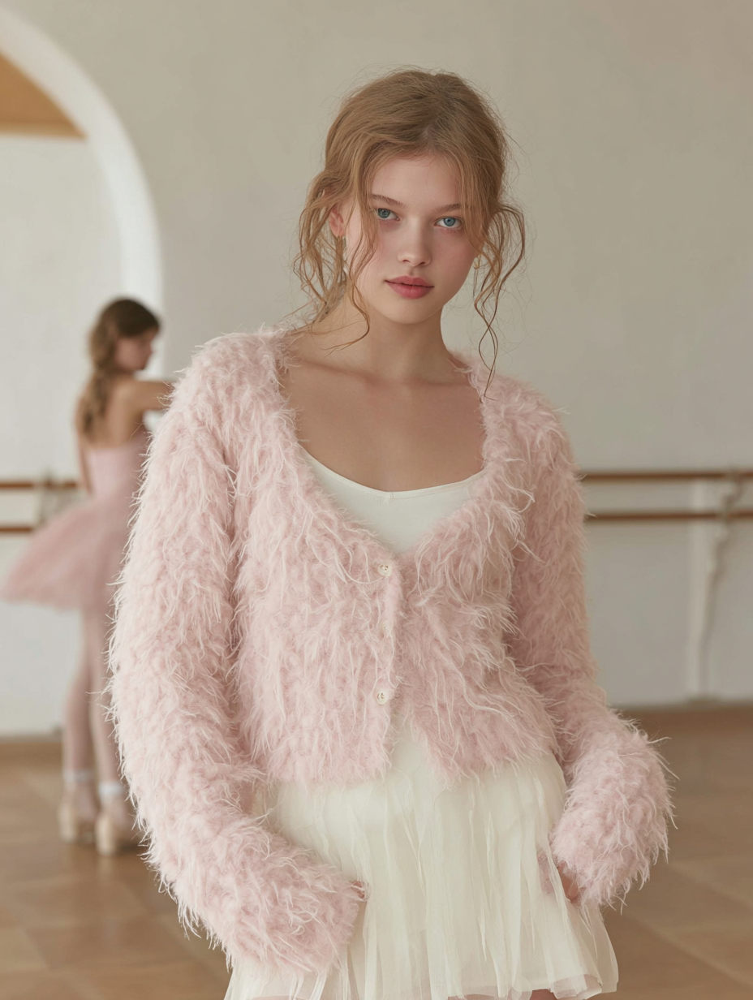
a young ballerina in a pastel pink, fluffy jacket and mini skirt, loosely tied brown hair with soft wispy strands framing her face, stands gracefully on the ballet studio floor. the soft light accentuates her delicate features as she poses with an elegant posture. her hair is styled in loose waves that fall around her shoulders. she wears a white tank top underneath the cardigan, adding to its playful yet sophisticated appearance. behind her, there is another dancer wearing similar attire, creating a harmonious atmosphere of elegance within the dance space. --ar 3:4 --p 8euhz28 --v 7
[ROMANTIC WARM PINK + --sref 7237300710]
[ROMANTIC WARM PINK + --sref 7237300710 활용 예]
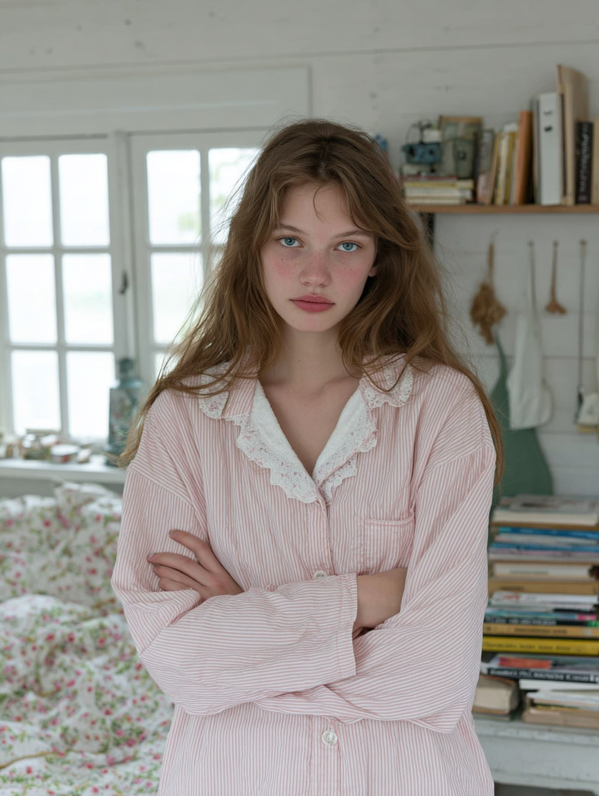
[PROMPT]
a young woman standing in a cozy bedroom, wearing soft pink striped pajamas with lace details, arms crossed, natural expression, slightly messy long brown hair, fair skin with subtle blush, soft daylight coming through the window, cottagecore interior, floral bedding, vintage books stacked on the bed, calm and quiet morning eye-level shot, ultra detailed, soft shadows, no depth of field --ar 3:4 --raw --sref 7237300710 --p 8euhz28 --v 7
[ROMANTIC WARM PINK + 두개의 스타일 코드 활용 예]
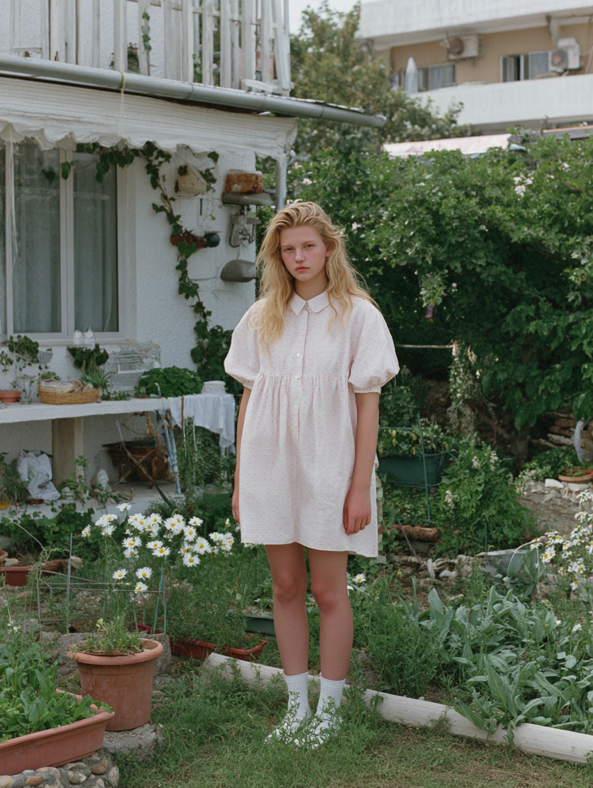
[PROMPT]
a young blonde woman wearing an oversized baby pink dress and white socks, standing in the backyard with many plants around, portraiture iconography lookbook style, cottagecore style --ar 3:4 --sref 3539828485 7237300710 --p 8euhz28 --v 7
스타일 코드 : --sref 7237300710
- OHHEE가 직접 셋팅한 무드보드 --p 8euhz28 에
직접 제작한 스타일 --sref 7237300710 을 함께 사용하면 생성되는 아웃풋입니다. - 아동복, 홈웨어 / 원마일 웨어 브랜드, 걸리시한 디자이너 브랜드의 룩북에 적합하도록
무드보드 빌딩과 -- sref 코드 셋팅을 함께했습니다.
프롬프트 가장 뒤에 --p 1ayuare --sref 7237300710 를 붙여 사용합니다. - 인종/베이스는 ROMANTIC WARM PINK 무드를 단독 사용하는 것과 크게 다르지 않습니다.
--p 8euhz28 --sref 7237300710 --v 7
[PROMPT]
a stack of fluffy, soft pink and white crocheted blankets is placed on an elegant wooden stool in the corner of a sunny room with potted plants. the scene exudes warmth and comfort, creating a cozy atmosphere. this composition creates a serene space where you can relax or cuddle up under these luxurious blankets. the image features focus stacking, high-resolution photography, and detailed textures. --ar 3:4 --sref 7237300710 --p 8euhz28 --v 7
‘a stack of fluffy, soft pink and white crocheted blankets’ 을 다른 소품으로 변경하여
사용할 수 있습니다.
내가 판매하는 제품, 내가 합성 작업을 진행하고 싶은 제품과 비슷한 사이즈의 소품으로 변경하여
이미지를 생성 한 후 나노바나나로 제품만 교체하면 스튜디오에서 촬영한 듯한 아웃풋이 탄생합니다.
[SHABBY CHIC & COTTAGE MOOD]
[SHABBY CHIC & COTTAGE MOOD 활용 예]
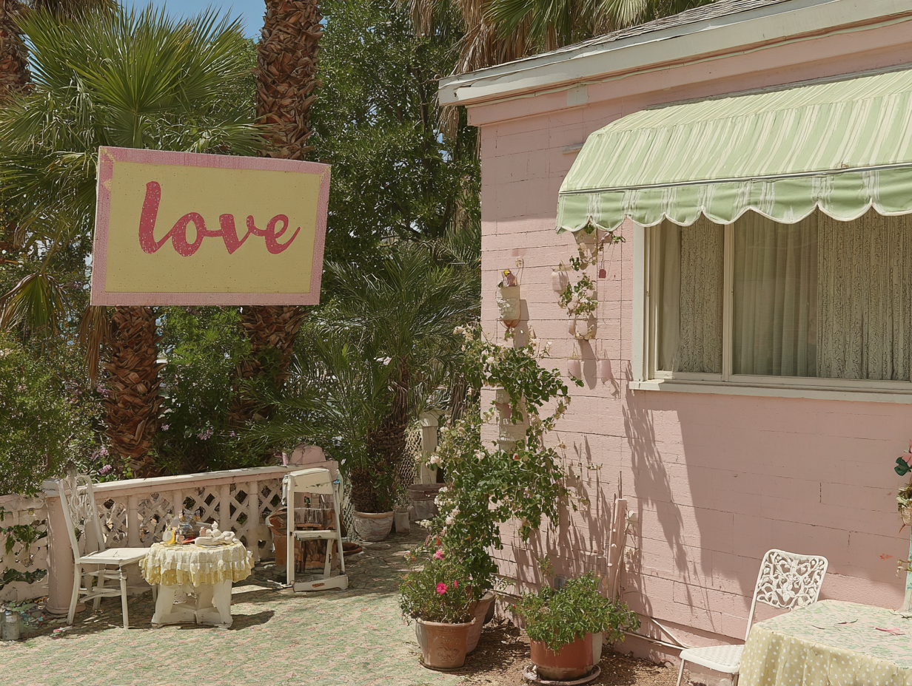
[PROMPT]
in backyard, sign board "love" --ar 4:3 --sref 8013884104 --p qj5ci6x --v 7
”love” 대신 내 이름, 내 닉네임, 우리 브랜드 명을 넣을 수 있습니다.
스타일 코드 : --sref 8013884104
- OHHEE가 직접 셋팅한 스타일입니다.
핑크, 민트, 레몬 옐로우 컬러가 키 컬러이며 floral fabric / lace curtain / shabby fabric 과 같은
빈티지 로맨틱 인테리어(Vintage Romantic) 키워드를 프롬프트에 넣지 않아도
자연스럽게 생성될 수 있도록 셋팅했습니다. - 코티지코어 + 쉐비시크 + 빈티지 로맨틱 무드를 살린 스타일입니다.
- 인종 베이스 : White European / Scandinavian
--sref 8013884104 --v 7
[PROMPT]
Detective and boy --ar 3:4 --sref 8013884104 --v 7
핑크색 가게, 핑크 색 문 앞 이라는 프롬프트를 넣지 않아도 실내라는 조건을 입력하지 않으면
배경으로 자연스럽게 키컬러로 셋팅한 핑크, 민트 톤 건물이 생성됩니다.
[WHIMSY:@//DREAMCORE MOOD]
[WHIMSY:@//DREAMCORE MOOD활용 예]
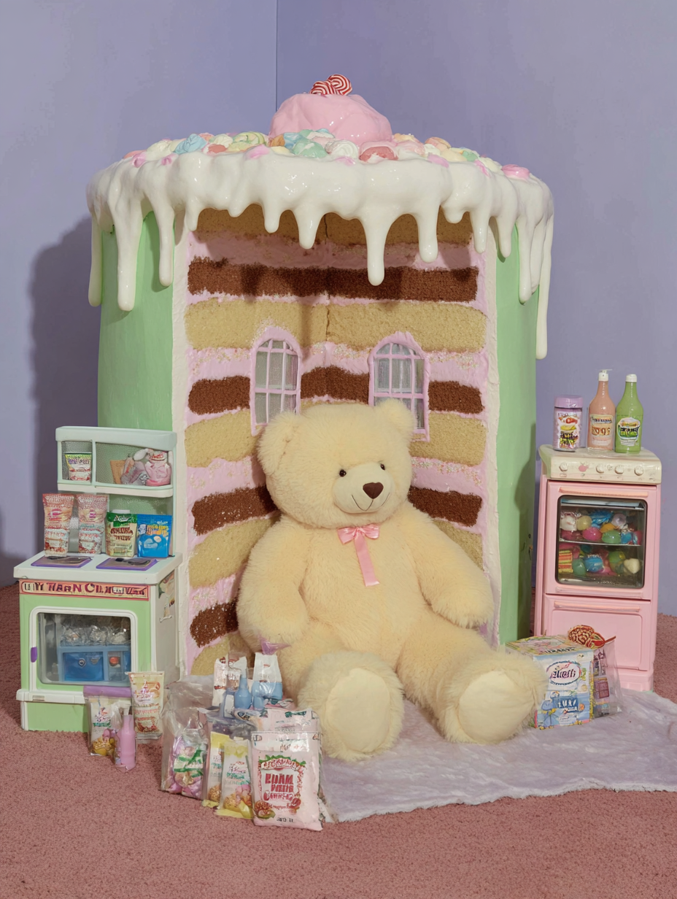
[PROMPT]
a pastel-colored plush teddy bear living inside a giant layered cake, rooms carved into sponge layers, dripping cream walls, candy windows, whimsical architecture, surreal edible world, soft pastel tones, playful, dreamy, slightly absurd atmosphere --p xfz9546 4wiodpk --sref https://s.mj.run/jy0UBq0ZOcQ https://s.mj.run/NqYA0tO6XIo --v 7
[PROMPT] \>\>\>
a baby lambs lost inside a surreal mirror maze, reflections multiplying endlessly, floating stars and moons inside mirrors, a surreal pastel-colored background, soft glowing haze, dreamcore aesthetic, slightly uncanny fairytale mood, cinematic composition, ultra detailed, no text, no watermark --ar 3:4 --raw --profile 4wiodpk xfz9546 --v 7
무드보드 코드 : --p xfz9546 4wiodpk
- OHHEE가 직접 셋팅한 무드보드 - - p 코드 qke1izt 에
미드저니 익스플로러에서 수집한 중국 유저의 코드를 조합했습니다.
--p xfz9546 를 단독 사용하여도 비슷한 분위기의 이미지가 생성되지만
두 코드를 함께 사용하면 좀더 화려한 색감의 이미지가 생성됩니다. - 동화, 드림코어 작업, 파스텔 톤의 키치한 느낌의 작업을 할 때 유용한 무드보드 입니다.
- 인종/베이스 : European / Caucasian / freckles skin, 과장된 메이크업이 특징입니다.
- 색감의 일관성, 안정화를 위해 원하는 색감의 이미지를 레퍼런스 이미지로 첨부하여 작업하면
훨씬 안정적인 색감의 결과물이 나옵니다.
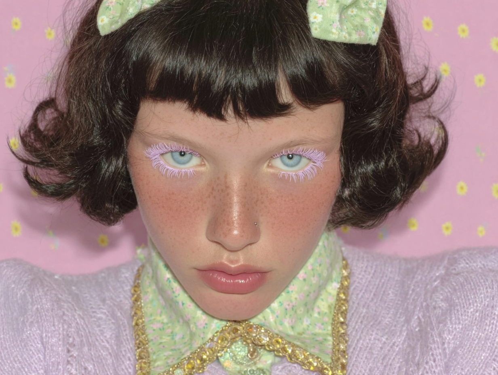
girl, close-up shot --ar 4:3 --profile xfz9546 4wiodpk --v 7
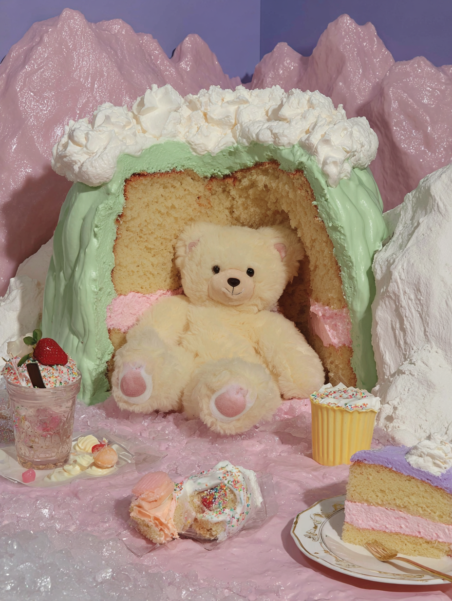
[PROMPT]
a pastel teddy bear hiding inside a giant cupcake, peeking out from soft frosting layers, whipped cream textures surrounding it, cozy surreal dessert environment, pastel tones, whimsical calm mood, --sref https://s.mj.run/jy0UBq0ZOcQ https://s.mj.run/NqYA0tO6XIo --ar 3:4 --raw --profile xfz9546 4wiodpk --v 7
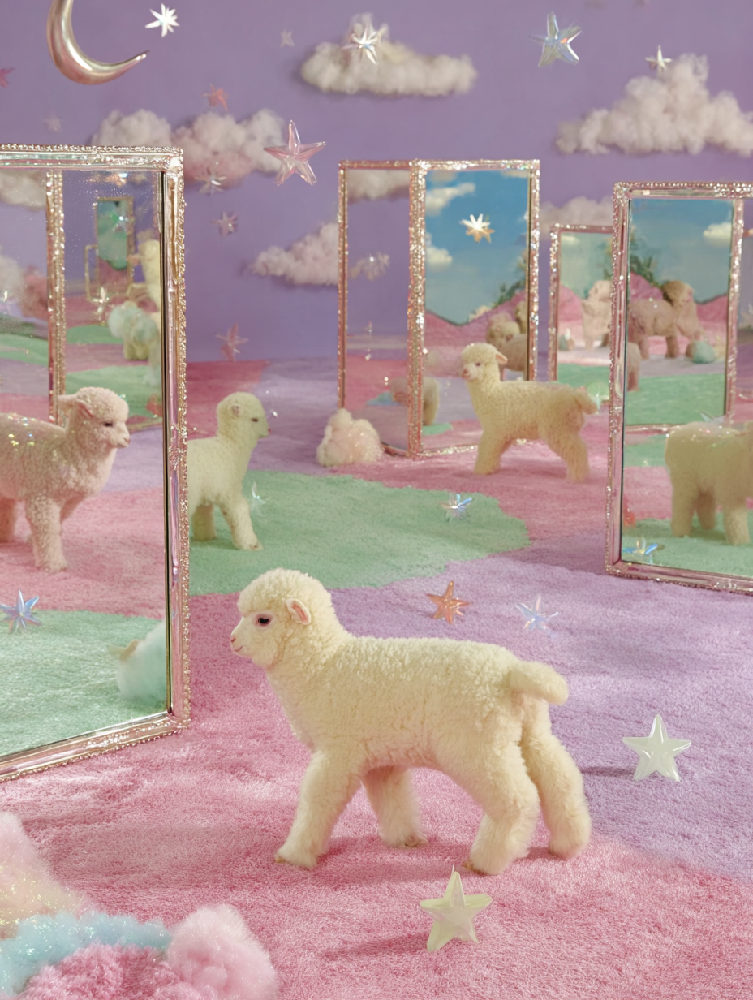
[PASTEL BLUE /FLORAL MOOD]
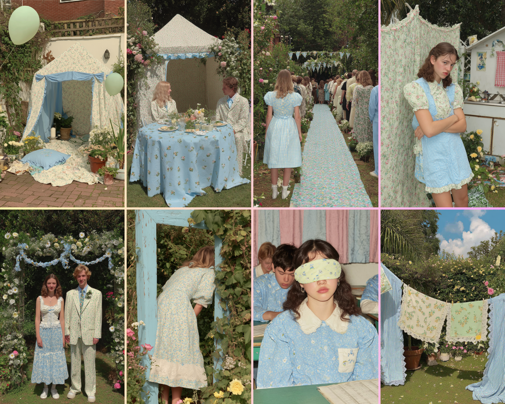
[PASTEL BLUE /FLORAL MOOD] 활용 예
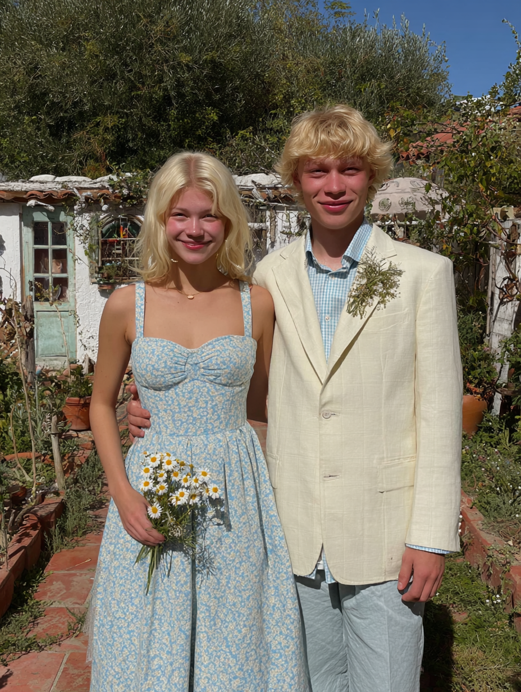
[PROMPT]
full-body shot of a blonde woman wearing a blue and white floral dress, holding wild flower in her hands, posing with a young man dressed as an english gentleman, wearing a pastel cream blazer and light grey trousers, in an outdoor garden setting on a sunny day with a blue sky --ar 3:4 --profile awvn9n2 qj5ci6x --sref https://s.mj.run/fMI8yCL4rkY --v 7
무드보드 코드 : --profile qj5ci6x awvn9n2 --sref https://s.mj.run/fMI8yCL4rkY
- OHHEE가 직접 셋팅한 무드보드 --p 코드 2개 + sref 이미지를 사용하는 무드입니다.
미세한 그레인, 은은한 자연광으로 빈티지한 분위기를 극대화 하도록 셋팅했습니다. - 야외, 가든 뷰에 어울리는 무드입니다.
- 인종/베이스 : Caucasian, 인형처럼 예쁜 외모는 아니나 빈티지 무드에 어울리는 정감 가는 외모를 의도하고 셋팅 하였습니다.
--profile qj5ci6x awvn9n2 --sref https://s.mj.run/fMI8yCL4rkY --v 7
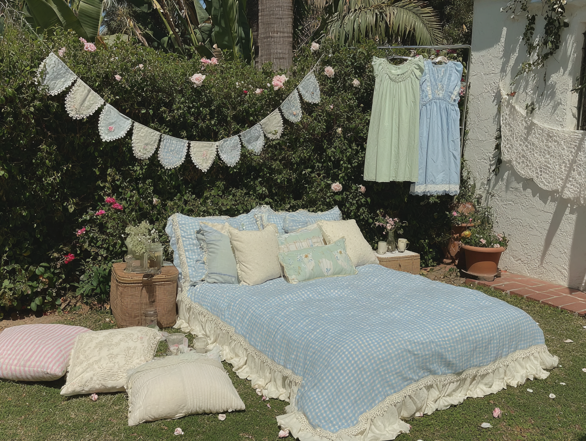
[PROMPT]
backyard, fragile feeling --ar 4:3 --profile qj5ci6x awvn9n2 --sref https://s.mj.run/fMI8yCL4rkY --v 7
짧은 프롬프트지만 미드저니의 창의성에 기대어, 매우 재미있는 결과물이 나오는 프롬프트 입니다.
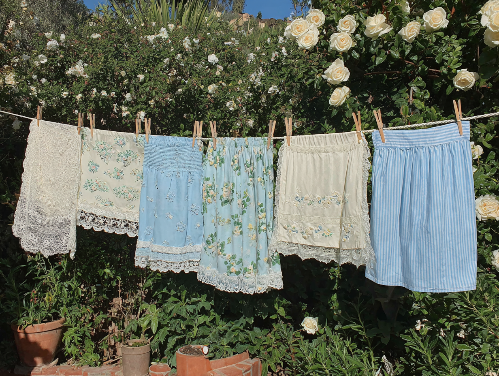
[PROMPT]
vintage cottagecore laundry scene, delicate lace linens and floral embroidered cloths hanging on a clothesline, soft pastel blue-fabric, intricate white crochet lace pieces, sunlight shining through thin fabric creating gentle shadows, linens swaying slightly in the breeze, wooden clothespins, lush green garden background with small cream flowers, warm natural afternoon light, soft nostalgic atmosphere, high-detail textures --ar 4:3 --profile qj5ci6x awvn9n2 --sref https://s.mj.run/fMI8yCL4rkY --v 7